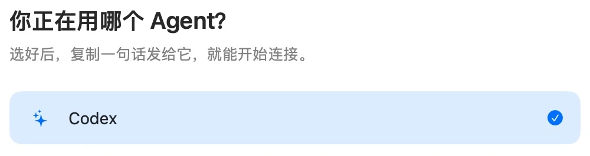

01 / macOS 应用 · 开源实验
TalkWTF
好几个 Agent 会话同时开着，怎么把一句话交给对的那个？
- 我的工作
- 产品定义、交互与验收
- 实现
- 基于 Handy，AI 辅助实现
- 状态
- 源码公开，完整联调进行中
TalkWTF / 交互细节真实界面 · 局部
不用切窗口，
也知道这句话会送给谁。
先配对会话，再绑定热键。
目的地不跟着当前窗口走。

图中已配对会话 · Codexfn + option_right + right该热键只对应这个会话；界面细节可点图看原图。
连接之前


我的取舍把热键绑在会话上，而不是把转写贴进当前窗口。投递失败时保留文字，不自动重发。
从切窗口开始
本地转写已经能把话说成字。但要交给 Agent，还得离开正在看的内容，找到那个会话，再粘贴进去。多个会话同时开着，每次都要确认目的地。
先连接，再说话
选择 Codex、Claude Code、OpenCode、Cursor，或其他能读本机文件、运行命令的 Agent，把配对提示词贴进要连的会话。每个会话绑定独立快捷键；图中 Codex 的热键是 fn+option_right+right。
开始说的时候目的地就定了。中途切窗口也不改投递对象，不把文字贴进当前窗口。失败或结果不确定时，转写保留，由人决定下一步，不自动重发。
实现与当前进度
我负责产品定义、交互和验收。SwiftUI 外壳与 Rust 核心在 Handy 上用 AI 辅助实现；润色和词库的部分交互参考了 OpenTypeless。
配对、回执、会话绑定和本地适配器投递已用测试数据核对，包含失败响应。麦克风到各客户端的完整联调仍未完成。应用处于实验阶段，临时签名、未做 Apple 公证；构建需要 Apple Silicon、macOS 14+、Xcode 与 Rust。
界面原图
可切换截图；点击图片查看完整尺寸。